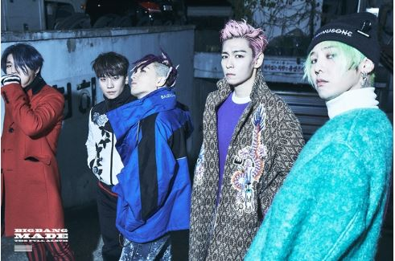
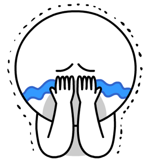

!!!BIGBANG โชว์พิเศษ LAST DANCE
ครบทีมสุดท้ายใน Inkigayo ก่อน T.O.Pเข้ากรม

| 12 มกราคม YG Entertainment เปิดเผยว่า “BIGBANG ได้เตรียมโชว์พิเศษ ‘LAST DANCE’
ที่จะมีขึ้นในรายการ SBS Inkigayo วันที่ 15 มกราคมนี้
โชว์นี้จะเป็นโชว์สุดท้ายของพวกเขาในการทำกิจกรรมครั้งนี้”
เนื่องจาก ท็อป มีแผนเข้ากรมในเดือนกุมภาพันธ์นี้ ทำให้โชว์รายการ SBS Inkygayo
ครั้งนี้จะเป็นโชว์สุดท้ายของพวกเขาในแบบครบทีม
ก่อนหน้านี้พวกเขาสามารถส่งเพลง FXXK IT คว้าอันดับที่ 1 Inkigayo
ได้เป็นเวลา 3 สัปดาห์ติดต่อกันอีกด้วย
 เรื่องนี้แอดบอกได้เลยว่า sad มาก!!!
|